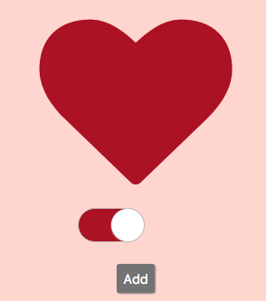
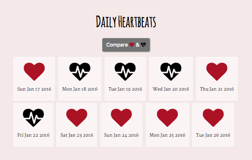
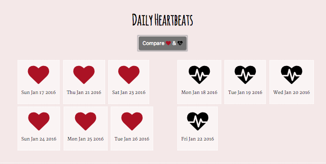
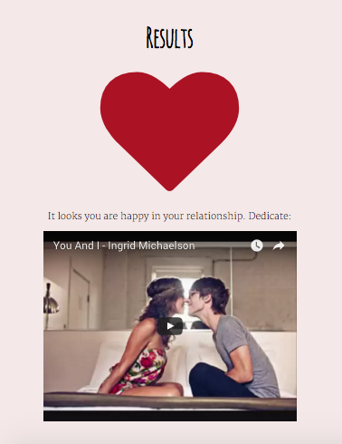

How's your heart?
Keep track of your relationship with
love diary
Add a heart each day
 
Compare how many times you felt good vs bad

Then dedicate a song expressing your feelings

Try Love Diary